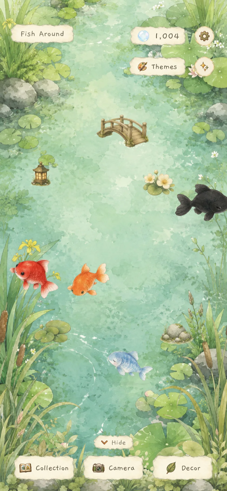
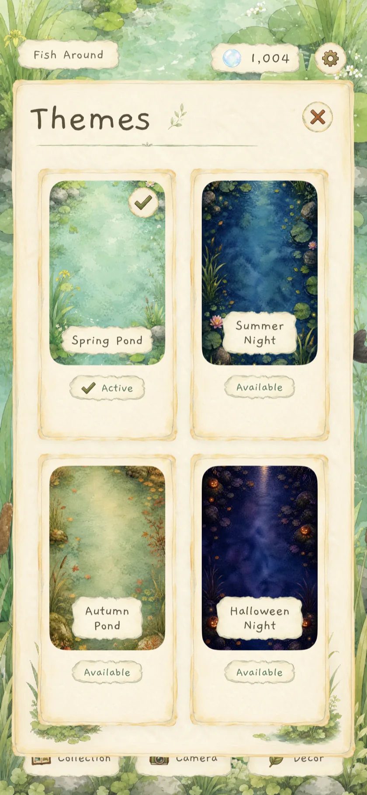
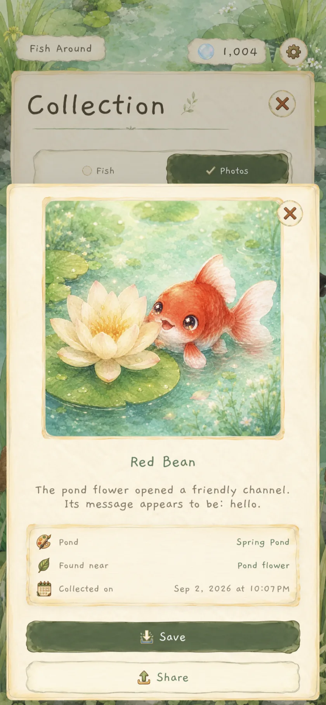
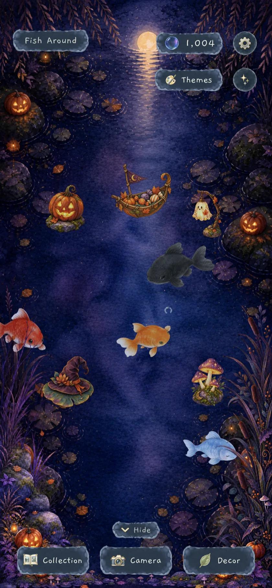

Spring Pond
Soft leaves and clear morning water.
Version 2.0 · iPhone & iPad
Meet four personality-filled fish, make gentle ripples, arrange watercolor decorations, and keep the photo memories they bring home.


New in version 2.0
Each pond has its own portrait and landscape painting, ambient color, music, decorations, and hand-painted interface.
Soft leaves and clear morning water.
Moonlit lilies in a deep blue pond.
Warm reeds, stone, and fallen leaves.
A seasonal pond, available September 1–October 31.
A pond that remembers
Spend time with Tangerine, Red Bean, Blue Nap, and Inky. Familiarity grows at its own pace, and each fish may return with a photo and a few words of its own.

Gentle interactionsTap the water, visit a fish, or simply watch.

Ambient momentsDiscover small theme-specific surprises.

Your decorationsEarn bubbles and arrange each pond your way.

Photo memoriesKeep, save, and share the moments they bring back.

Seasonal · September 1–October 31
Halloween Night brings cooler moonlight, glowing pumpkins, playful ghosts, its own ambient moment, and a complete dark hand-painted interface.
Available to unlock during the season. Once unlocked, it stays in your pond collection.
Private by default
Fish Around works offline and uses no accounts, analytics, advertising trackers, or third-party SDKs. Progress and preferences stay local.
Read the privacy policy